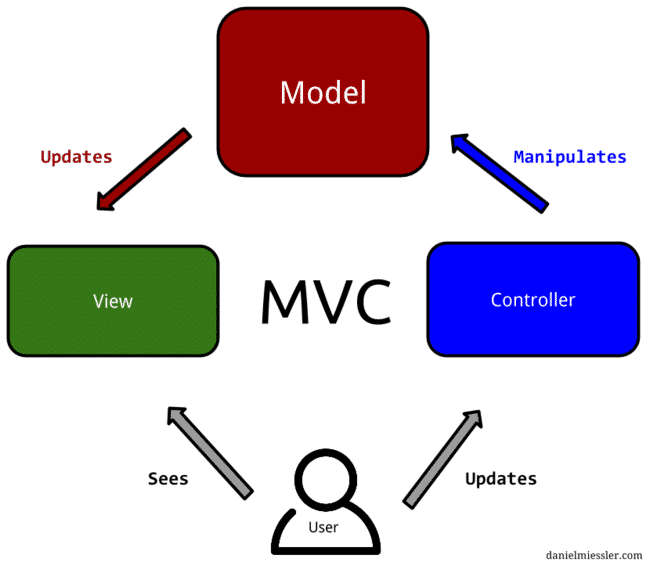
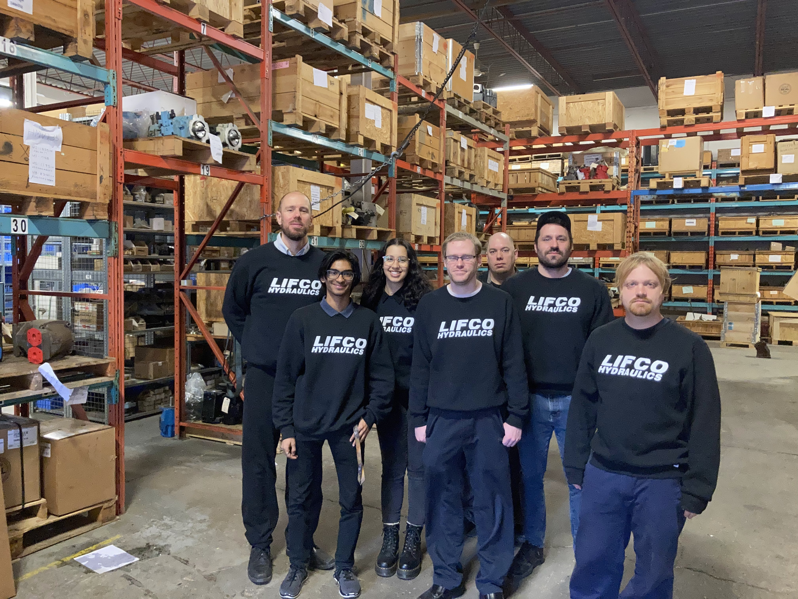
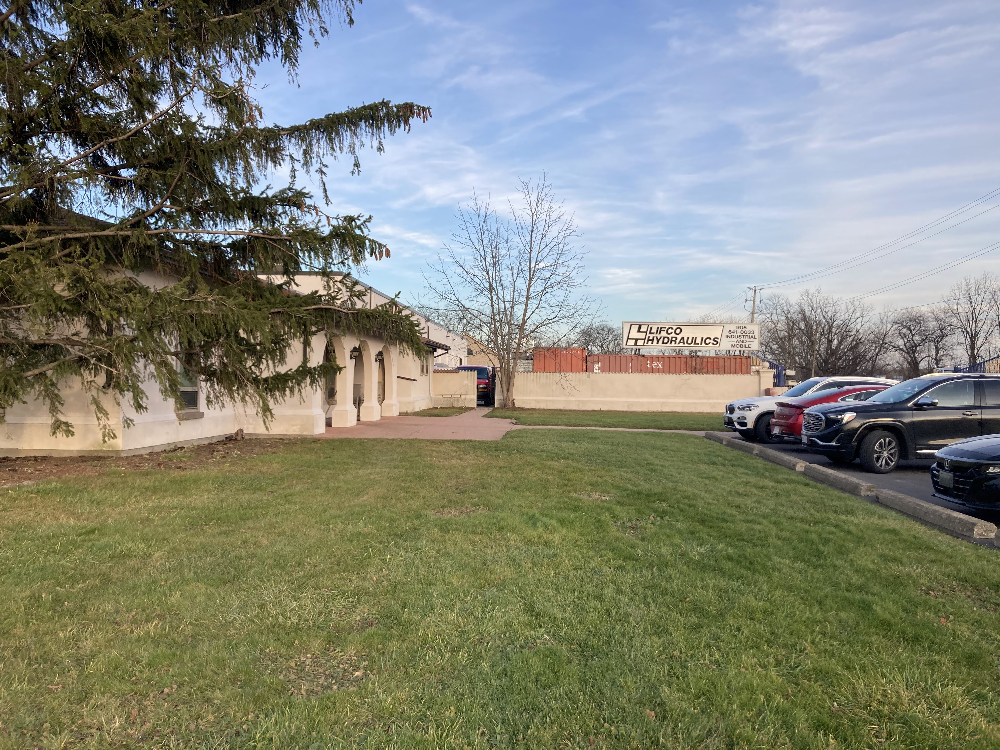

Abstract
What interests me the most about the internet is the fact that one person has the capability to reach thousands, without having to take a single step. Web developers get a certain privilege in this environment as they get to push out what others see and influence how they interact with web content.
Through my Summer/Fall 2021 8-month co-op at Lifco Hydraulics as a Full Stack developer, this privilege was given to me. I hope to share what I learned from this experience, and what I brought to the company and its customers. I’ll highlight the goals I set for myself and showcase the skills I gained to give insight on my first step in a professional tech career.
About The Employer
Lifco Hydraulics is an expanding company that has been around since 1978! They stock, distribute and service hydraulics across North America with inventory in the US (Buffalo, NY.) and Canada (St. Catharines, ON., Toronto, ON., & Markham ON.). Additionally, sales offices are located in Canada, Mexico, and the US. In just one year, Lifco can expect to sell to 83 different countries.
Denison, Parker & Linde are just a few names on their product line of over 250 000 parts. The factory is equipped with a 400-horsepower piston pump test stand, trained technicians, and computerized reporting capabilities.
During my time at Lifco, we acquired 2 more companies. The company flourishes in web development as updates and fixes are constantly being rolled out to all 3 sites from the IT team based in St Catherine’s.
Job Description
At the start of my first 4 months, I was new to the web development scene and getting acquainted with the .NET environment/MVC architecture and my fellow co-op was in the same position. Lifco already had an employee-side site section called Stockroom, which was an inventory collection (products and their details) that could be searched through and filtered.
We were tasked with creating a new system to replace Stockroom that could sort the inventory the same way and provide a new filter of items that were out of stock so that employees could easily see what needed to be restocked and could check off those items to add directly to a purchase order (orders placed to vendors with details on parts needed).
There was an ease of mind knowing that the first project was on the employee side, as mistakes were more frequent, but were low risk and there wasn’t a strict deadline looming over us. I had never programmed on a team before, but my coworkers coming from college had experience with this, making it easier to transition from pair programming to smoothly making independent updates and dividing the project. We started with only the Out-of-Stock Report to simplify the large task, and expanded until we had a Stockroom 2.0
Not everything was big picture projects, in between the larger tasks there was always work to be done. Our supervisor would hear from sales employees, customers, and the boss about bugs on the site and as more weekly updates were pushed to the live site, more bugs were found. He would assign the bug fix to the programmer he saw fit for the job, as I was doing full stack development, my bug fixes ranged from simple HTML visual updates, to in depth data query fixes, to input/output the correct information to/from our database.
My second work term was more backend oriented. We were shifting our focus to the newly acquired companies TRK & ESP and needed to restyle their sites to match the format of Lifco. At this point, I had joined the daily stand-up meetings to discuss what our tasks were and how projects would be moving foreword. I would frequently set up my own online meetings with sales employees and warehouse workers to get a sense of what went wrong when making bug fixes. We’d discuss the format of spreadsheets I would need to make database uploads for the inventory they had just counted. The ESP site had no data on it, so I oversaw setting up departments and putting the new products in their respective departments in our Mongo Database.
Learning Goals
1. Learn how to efficiently build Web-apps using the ASP.NET framework
I was nervous coming into my first job knowing I would have to deal with an unfamiliar framework. The good news was, I didn’t have to start from scratch! The Lifco web-app was already well established and made it past all the difficult steps in starting a new app. This meant that with my first project working on only a section of the website, I could analyse the section I was aiming to replace, strip out the formatting, and add in my new features all while learning the structure. ASP.NET apps can be developed on Windows, Linux, MacOS and Docker so with this goal achieved I also gained versatility.
2. Develop my teamwork skills
Each new project involved a new partner or a new team. If new content was being added to the site, the supervisors and entire team would brainstorm together. I would work with the graphic designer to create and implement mock-ups and check back in to make sure the result was as intended. I started by doing independent work and then trying to force my part in with others, but over time and with help from my team I realized that the backbone of teamwork is in the planning and development stages. As long as everyone has the right idea initially, and meet frequently so that any updates are understood by everyone, the work flows smoothly between members and the project finishes itself.
3. Learn the control flow of the MVC architecture
Model-view-controller is a standardized architecture across many web-apps and can be functional in multiple stacks. Programming languages tend to be very transferable and easy to pick up, but architectures and being able to have a clean control flow is essential for a good web-app. I realized this because of how much it made sense to code by separating the backend and frontend. Having all the complicated queries in the controller means your html (in this case Razor) pages can be simple and easy to edit. Not only did I learn how MVC control flow works by making my own Out of Stock System following this flow, but I figured out why I was following it.
4. Learn how to write quick and efficient queries using LINQ
I started with very basic get queries, just fetching data to display and gradually built up from there. The next step was when data was stored across multiple tables and I had to use joins and relate the data to make sure it matched up correctly (match a part to its vendor in a separate vendor list using the vendor ID). I felt confident once I could start updating and deleting records in our Traverse and Mongo databases. I knew some SQL from a completed course right before my work term, so I see how LINQ is just a quicker way to query in C#, but I’m confident what I learned will be easily transferable to the more commonly used SQL. I learned the fundamentals of one language through another. I had help in making my queries more efficient from a co-worker who recently obtained a Masters in Big Data, she walked me through the process of how she sped up my initially slow Out of Stock report queries.
5. I would like to learn how permissions work on a live site that has restrictions for employees/customers & guests
When we acquired our second company ESP, we had to create the new site using the existing Lifco and TRK sites as a template. For the duration of my work term, the permissions system was already in place and the login/logout functionality worked perfectly. Customer levels had been established and employees had their own special access, so I never dealt with that system and accordingly, never knew how it worked. My supervisor gave me the opportunity to implement the permissions on the ESP site from scratch. This means I got to dissect the examples I had of correct permissions and didn’t miss a single piece of the system to get it working on the new site. I hope to add my own log in system to my personal website when I get the chance.
Skills
C#
MVC
LINQ
ASP.NET
MongoDB
Acknowledgements
I’d like to first thank my boss Fraser Berkhout, for giving me this amazing experience and guiding me along the way. My supervisor Chris Bain taught me a lot about leadership and was always there to help me and clarify for me, even with everything else on his plate. Kyle Weymark has showed me as much about coding as several courses could. Wayne Burgess shared his design expertise and Shawn Dalrymple would help me with even trivial things that I didn’t understand. Layla Mansour was the other co-op student with me and it was fun learning together. Thank you all for your patience and for helping me grow as a student of Computer Science.
Conclusion
When I was starting this work term, I was worried about what I’d be able to bring to the table, but what I didn’t realize at the time was how much more I would take back from the experience. I gained both tech and personable skills. Everyone I interacted with made me want to dive deeper into this industry and see what else I can learn from it. I’m leaving Lifco Hydraulics with a sense of accomplishment, and gratitude. The bar is set high for what comes next!
